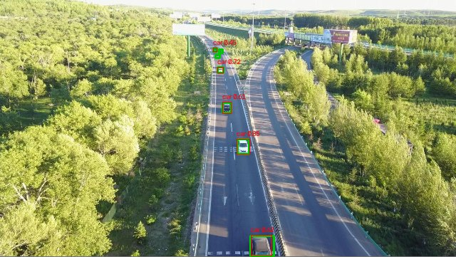
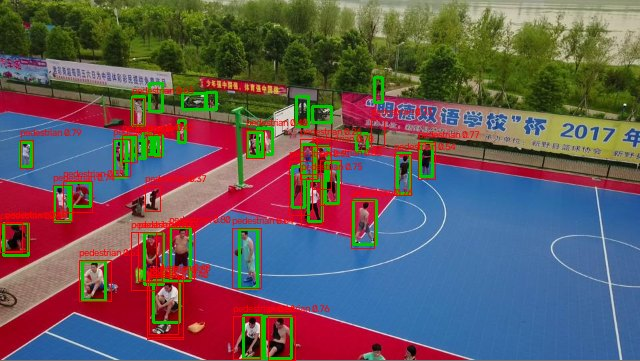
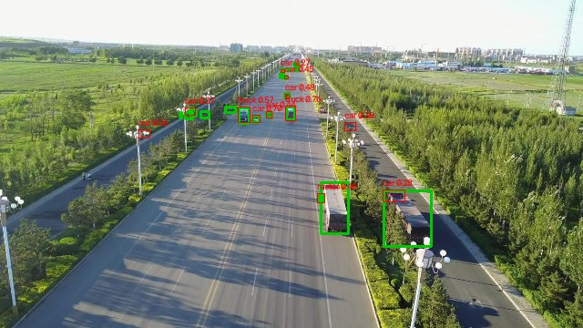

The findingThe parts predict −3.0; the stack measures −5.5
Drone footage is hard for general-purpose detectors. A car can be under 20 pixels across in a 1080p frame, more than half of VisDrone’s objects are smaller than 32×32 pixels, and onboard compute is small. Recent drone detectors respond by stacking techniques that each have published gains, on the assumption that the gains carry over. This paper tests that assumption directly on YOLOv10n.
Adding the modules one at a time: the P2/−P5 step costs twice what it costs alone
What is newTesting the combination instead of assuming it
| Common practice | This study | |
|---|---|---|
| Assumption | Techniques that help alone will help together | Tested directly on one model, with three training seeds |
| Evidence | One aggregate mAP number | Independent and additive ablations, TIDE error types, per-class results, zero-shot transfer, held-out and test-dev splits, and an audit of the weight transfer |
| Outcome | A new state-of-the-art row | A measured failure, located in one interaction, plus the single experiment that would confirm the cause |
The four modulesOne change for each structural gap
Each module answers a known weakness of YOLOv10n on aerial images. None is new on its own; the contribution is putting all four in one model and measuring what happens.
PC-C2f: spatial convolution on a quarter of the channels
Small objects light up only a few feature maps, so a full 3×3 convolution over every channel spends most of its FLOPs on little. Partial convolution applies the 3×3 kernel to the first quarter of the channels, passes the rest through, and mixes them with a 1×1 convolution:
That removes about 75% of the spatial convolution cost; with the 1×1 projection counted, the saving per block is closer to 55–60%. The split also changes tensor shapes throughout the backbone, which matters later.
AG-FPN: gate each level before fusing it
Plain concatenation treats every channel as equally useful, so background clutter rides along into the fused map. A squeeze-and-excitation gate rescales each lateral input before fusion (squeeze ratio 16), and DySample replaces nearest-neighbour upsampling with content-dependent sampling offsets for 0.06 extra GFLOPs:
P2 head in, P5 head out; Wise-IoU v3 as the box loss
The P5 head (stride 32) exists for objects larger than about 256 pixels, and fewer than 0.8% of VisDrone boxes are that large. Removing it saves about 0.3M parameters and 1.2 GFLOPs, which pays for a P2 head (stride 4, a 160×160 grid) aimed at the 6–16-pixel range where the P3 head loses recall. Wise-IoU v3 replaces CIoU and damps the gradient from boxes whose loss is far above the running average, which in crowded aerial scenes are often ambiguous annotations.
Where the accuracy wentBelow every compared detector, and not uniformly
LAF-YOLOv10 was trained three times (seeds 42, 123 and 256; 300 epochs; SGD; COCO-pretrained initialization) on VisDrone-DET2019. That is 6,471 training, 548 validation and 1,610 test-dev images across ten classes. The other rows in Figure 4 are taken from their own papers rather than retrained here.
24.0% mAP@0.5, 7.8 points below the unmodified baseline
Large vehicles lose 10–15 points; pedestrians and cars lose 1–3
What the modules were built to fix did improve; missed detections swamped it
Real detections from the best, middle and worst of the validation set

BestSparse highway traffic. Every car is found.

TypicalA crowded court. Most people are found; distant ones are missed.

WorstTwo trucks in the foreground are missed or labelled as cars, the failure Figure 5 predicts.
| Module | Added alone | Added in sequence | |||
|---|---|---|---|---|---|
| mAP | Δ | GFLOPs | mAP | Δ | |
| Baseline | 31.5 | — | 6.28 | 31.5 | — |
| PC-C2f | 29.5 | −2.0 | 5.41 | 29.5 | −2.0 |
| AG-FPN | 32.5 | +1.0 | 6.32 | 30.5 | +1.0 |
| P2 head, P5 removed | 29.0 | −2.5 | 8.08 | 25.5 | −5.0 |
| Wise-IoU v3 | 32.0 | +0.5 | 6.28 | 26.0 | +0.5 |
| Evaluation | Images | mAP@0.5 | mAP@[.5:.95] | YOLOv10n mAP@0.5 |
|---|---|---|---|---|
| VisDrone validation | 548 | 24.0±0.4 | 12.3±0.2 | 31.8 |
| VisDrone held-out slice | 647 | 23.5 | 11.9 | — |
| VisDrone test-dev | 1,610 | 22.5 | 11.4 | — |
| UAVDT test, zero-shot | 15,069 | 37.8 | 19.8 | 47.8 |
The held-out and test-dev results sit close to validation, so the deficit is not validation-set overfitting. The larger UAVDT gap (−10.0) is compositional. UAVDT contains only cars, buses and trucks, and restricting VisDrone’s own results to those classes gives a 10.5-point gap.
| Component | Variants, mAP@0.5 |
|---|---|
| Attention gate in AG-FPN | SE 24.0 · Coordinate Attention 23.9 · CBAM 23.7 |
| Box regression loss | Wise-IoU v3 24.0 · SIoU 23.8 · EIoU 23.7 · CIoU 23.6 (TIDE localization error 2.6 to 3.1, same order) |
| Channels given the 3×3 conv | first C/4 24.0 ± 0.4 · a fixed random C/4 23.8 ± 0.5 |
The first-quarter and random-quarter results being indistinguishable matters for interpretation. Channel order after initialization means nothing, so PC-C2f works as a regularizer that limits which channels see spatial context, not as a principled selection of useful features.
Training converges smoothly; the gap is not undertraining
The likely causeHalf the backbone started from random weights
LAF-YOLOv10 is initialized by copying a COCO-pretrained YOLOv10n checkpoint tensor by tensor, wherever the shapes match. PC-C2f changes the channel layout throughout the backbone, so only 73 of 150 backbone tensors match. The other 77 start from random initialization and have to be learned from 6,471 images, orders of magnitude fewer than COCO.
Three results fit this account. PC-C2f alone costs 2.0 points while cutting GFLOPs by 14% as intended, so its compute saving works while its accuracy does not. The P2/−P5 swap costs twice as much on top of that weakened backbone (−5.0) as it does alone (−2.5), because a fine-grained head needs reliable low-level features. And the classes hit hardest are the large vehicles the removed P5 head used to serve.
The account is consistent with the data but not yet isolated. The test is a controlled run that transfers weights by name into PC-C2f’s reshaped backbone, or trains longer from random initialization, and checks whether the interaction penalty disappears. A P5-retained variant would also separate adding P2 from removing P5.
LimitationsWhat this study does not show
- The pretrained-transfer explanation is supported by the pattern of results, not by a controlled run.
- P2 was added and P5 removed in one step, so their effects are not separated.
- Comparison rows come from each method’s own paper, not a shared training recipe; their speeds were measured on their own hardware.
- Generalization is tested on one other dataset (UAVDT). AI-TOD would be a natural third.
- Hyperparameters follow YOLOv10 defaults, and variance is reported over three seeds without formal significance tests.
CitationCite this work
@article{nayeem2026lafyolov10,
title = {Small Object Detection in Drone Aerial Imagery with LAF-YOLOv10},
author = {Nayeem, Quratulain and Taranum, Fahmina
and Uddin, Mohammed Mudassir},
journal = {arXiv preprint arXiv:2609.14560},
year = {2026}
}